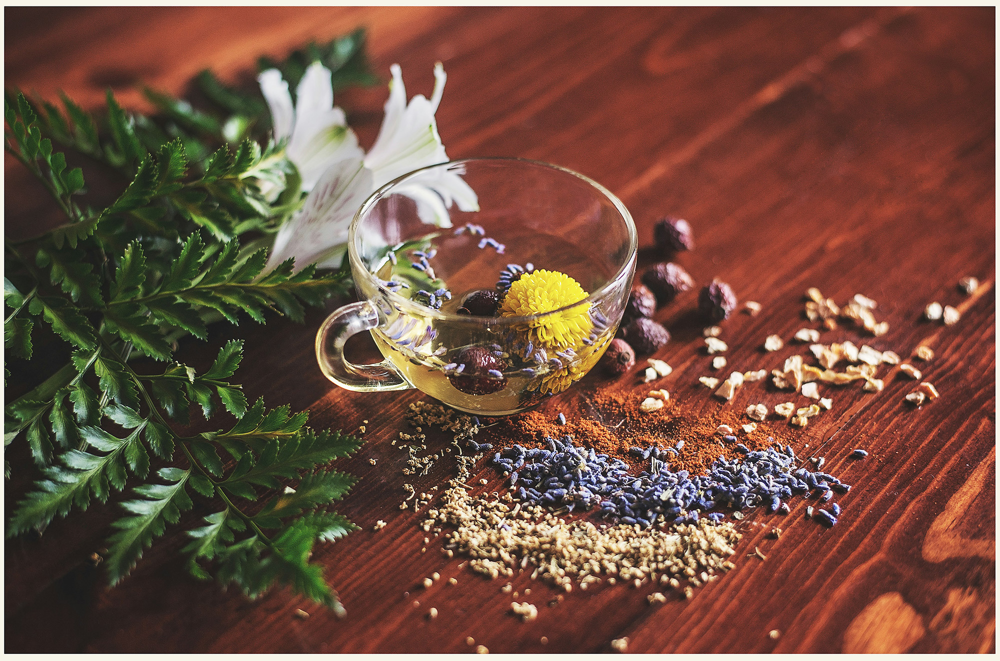
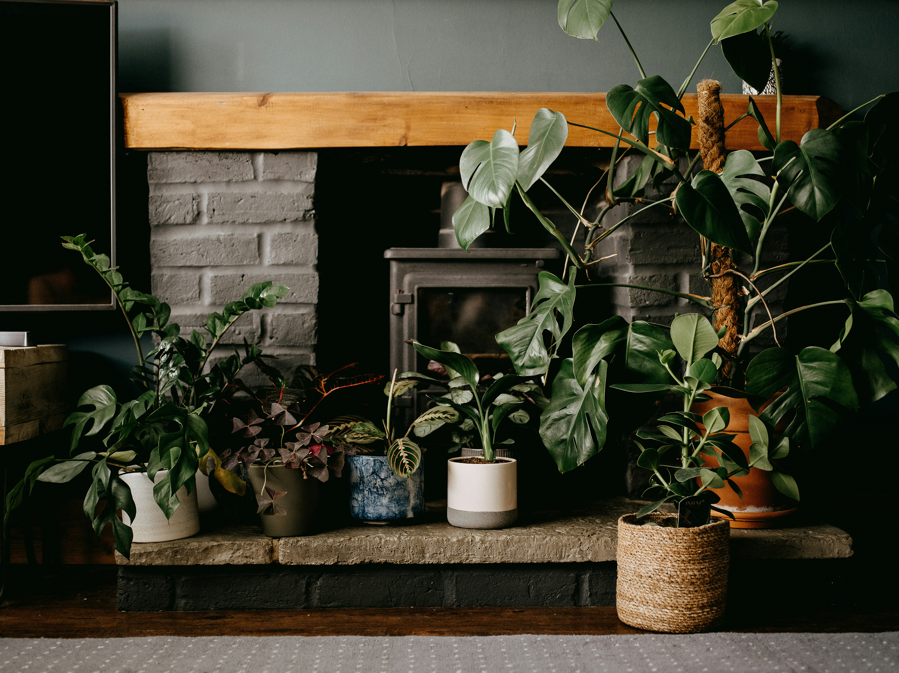
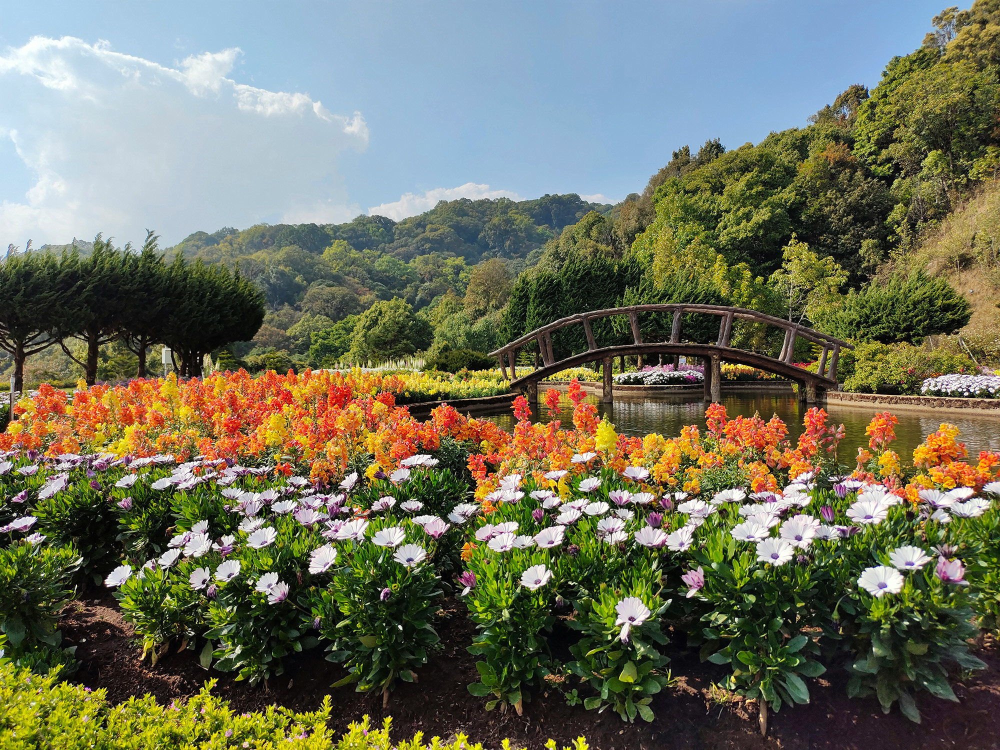

🪴 Our Plants & Products
Explore our selection of organic, locally grown plants designed to thrive in your home, garden, or workspace.
🌱 Herbs Collection

Fresh, easy-to-grow herbs perfect for kitchens and small gardens.
- Basil
- Mint
- Rosemary
- Thyme
🌿 Indoor Houseplants

Low-maintenance plants that bring life and freshness into any indoor space.
- Snake Plant
- Peace Lily
- Pothos
- Spider Plant
💐 Flowering Plants

Bright and colorful plants that add beauty and seasonal color to your garden.
- Petunias
- Marigolds
- Lavender
- Sunflowers
Shop Now 🛒
Explore our full selection or get personalized recommendations from our team.